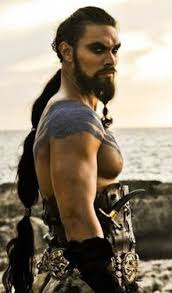
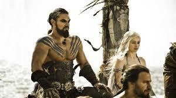
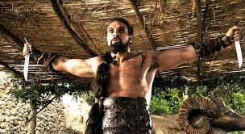
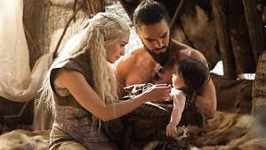
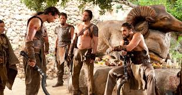
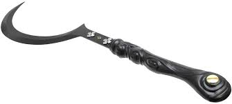

About Me
Photos of Me

I, Khal Drogo am a warlord of the Dothraki people. I married Daenerys Targaryen, as arranged by her brother Viserys. I am undefeated in battle. Viserys Targaryen conspired with Magister Illyrio to wed Daenerys off to me in order to get my support in an invasion of Westeros. The twat.
More Photos of me
Some of my best shots



The Dothraki: A History

Who We Are
The Dothraki are a race of nomadic horse-mounted warriors in Essos, the continent to the east of Westeros across the Narrow Sea. They inhabit the vast central plains of Essos, known as the Dothraki sea. Their bond with horses is such that Dothraki are said to be born, fight, and die in the saddle.
Weaponry
How good of a weapon is the Dothraki arakh

The Dothraki are a race of nomadic horse-mounted warriors in Essos, the continent to the east of Westeros across the Narrow Sea. They inhabit the vast central plains of Essos, known as the Dothraki sea. Their bond with horses is such that Dothraki are said to be born, fight, and die in the saddle.